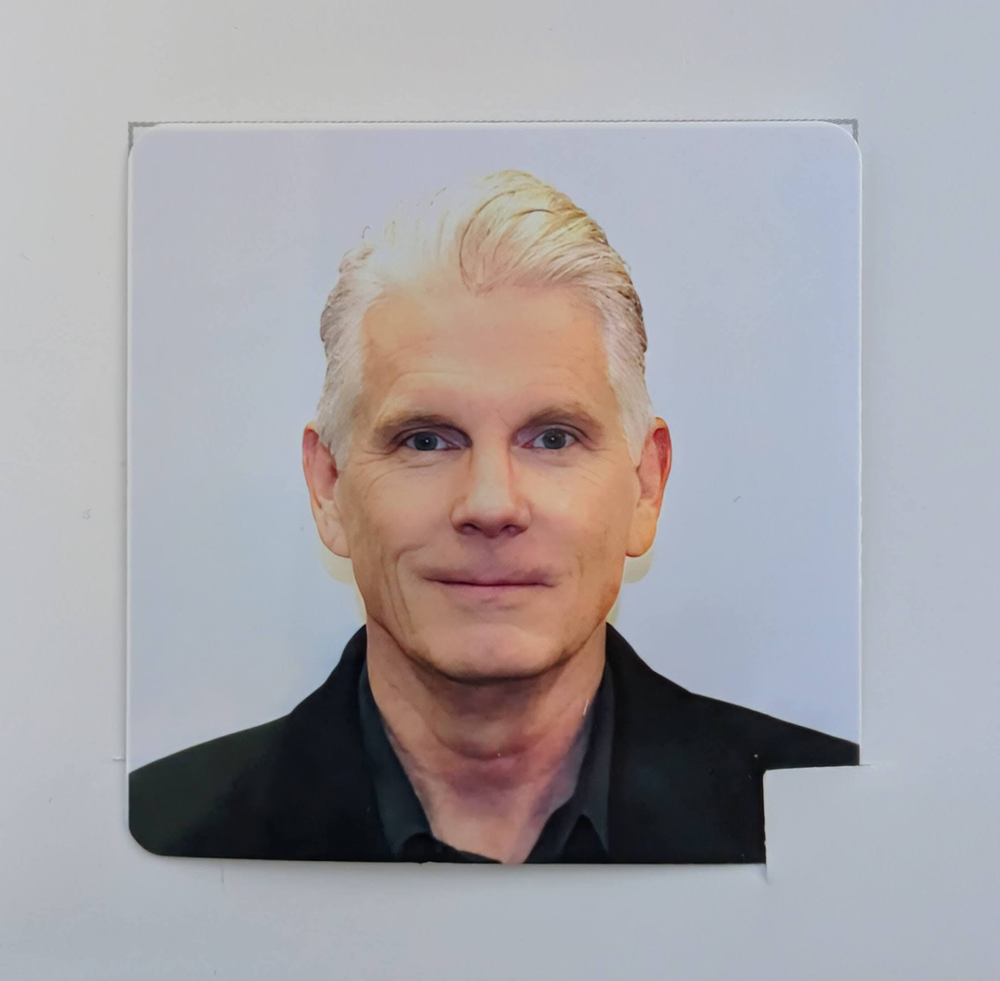

GitHub repo at mjm0therway.github.io

I am a Product Owner and Applications Manager at Cimtrix, a PDF Solutions company. Prior to Cimetrix, I was Director of Software Engineering at gategroup -- a group of experienced and dedicated technology experts who use their extensive industry background to deliver solutions that meet their customers' versatile needs. My focus is delivering value by building teams that deeply understand the inner workings of our customers and the industry.
Prior to gategroup, I was a senior consultant at CITYTECH, Inc (Now ICF Olson) -- a global consultancy specializing in enterprise application development, web experience management, mobile applications, cloud enablement and managed services. Prior to this I had a long career at Motorola in both hardware and software positions.
Cimetrix is a leading provider of software products for the electronics manufacturing industry. Headquarted in Salt Lake City, Utah
with offices in Tokyo, Taipei, Shanghai and my office in Chicago, IL.
I provide expertise to Cimetrix in the following areas:
- Cloud-native data analysis apps
- Enterprise Application Integration - EAI
- Managed services
- Electronics manufacturing with a focus on semi's
- Mobile solutions - Kafka running on K8S
- AI strategy for small, agile teams
- Apache Camel in Industrial IoT
- Data analytics: Simple Chi-Square test with Minitab, Excel, Python.
Feel free to contact me through GitHub. My personal profile is @m0therway, and I hope you have a great day!